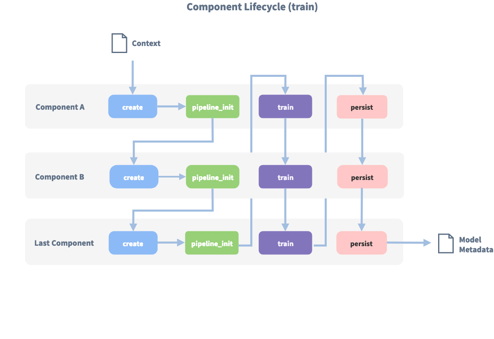
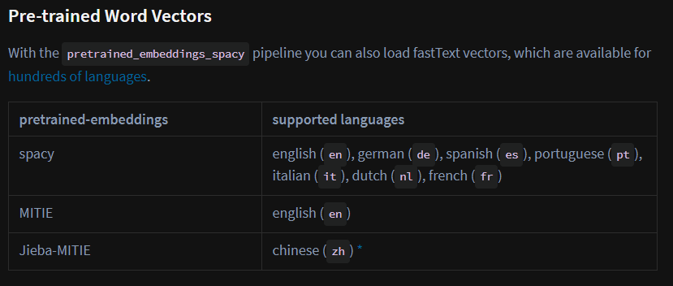
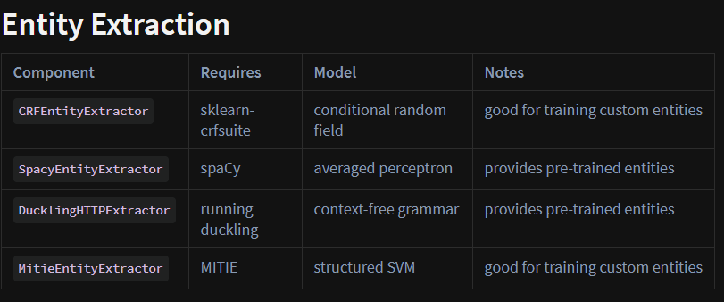
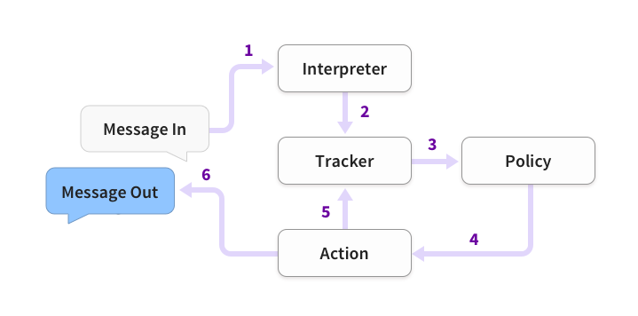

常用指令
- 新建RASA專案
1 | rasa init |
- 查NLU version
1 | python -c "import rasa_nlu; print(rasa_nlu.__version__);" |
- Run rasa server and open api
1 | rasa run -m models --enable-api --cors ‘*’ --debug |
名詞
- Named Entity Recognition(NER) 命名實體識別 : 標記語句中的字詞，例如:人名、地點、單位
- dialogue history
- software 2.0
安裝
- Required Python 3.6 or 3.7
- 安裝virtualenv虛擬環境，避免擾亂到系統
1 | sudo apt-get install python3-venv |
- 建立虛擬環境
1 | python3 -m venv --system-site-packages ./[虛擬環境名稱] |
- 啟用這個虛擬環境
1 | source ./[EnvirName]/bin/activate |
- 關閉虛擬環境
1 | deactivate |
- RASA install
1 | git clone https://github.com/RasaHQ/rasa.git |
- 執行指令rasa train錯誤訊息:Segmentation fault (core dumped)無法training問題，主要是gym要重新安裝。
1 | sudo apt update |
RASA NLU
pipeline 類似文字處理生產線
- 名詞解釋:messages經過一連串pre-processing、tokenize、entity extraction、intent classification的這一段處理過程，因此也稱作processing pipeline
而pipeline中的每一個處理步驟，例如:tokenize、entity extraction等則稱為component，一個pipeline中可以有多個component，根據case的需求自訂合適的components。
可以想像成
pipeline就像是一條食品生產線，在生產線中會經過一層層的工作站(Components)，負責食品的加工、包裝(pre-processing、entity extraction) - pipeline有順序性，不同順序會產生不同的結果
- RASA Component列表
假設在RASA中，設定的pipeline:[“A Component”,“B Component”,“last Component”]
執行順序如下圖:

-
RASA 有提供預設的pipeline template，例如:
- pretrained_embeddings_spacy
包含以下components
1
2
3
4
5
6
7
8pipeline:
- name: "SpacyNLP"
- name: "SpacyTokenizer"
- name: "SpacyFeaturizer"
- name: "RegexFeaturizer"
- name: "CRFEntityExtractor"
- name: "EntitySynonymMapper"
- name: "SklearnIntentClassifier"- supervised_embeddings
包含以下components
1
2
3
4
5
6pipeline:
- name: "WhitespaceTokenizer"
- name: "CRFEntityExtractor"
- name: "EntitySynonymMapper"
- name: "CountVectorsFeaturizer"
- name: "EmbeddingIntentClassifier" - pretrained_embeddings_spacy
Language Support
pipeline 支援語言

Entity Extraction
code 表示式:
Entities -> [name] (entityName)

-
Spacy extractor
displacy NER -
Regular Expressions 使用regex，可以幫助機器提升抓取Entity的效率
Example:
1 | ## intent:inform_zipcode |
- duckling extractor
duckling live demo
如何評估模型的好壞
RASA Core
Core 運作流程

- message會先在Interpreter進行資料轉換，轉換成字典集(包含original text、intent、entities)再傳遞給tracker
- Tracker(type:Object) 接收來自Interpreter的資訊，更新conversation state。(tracker負責追蹤目前的對話狀態，因使有關於訊息的資訊，大都可以在tracker中找到)
- Policy收到目前的Tracker state
- Policy根據接收到的狀態，決定要啟用哪一個Action
- Tracker會紀錄這次對話所採取的Action是什麼
- 根據Action內容，回覆user
Action
Bot對user採取的動作(response)
包含三種Action:
- default actions RASA預設
example: action_listen, action_restart, action_default_fallback
(All the default actions can be overwritten) - utter actions 單純傳文字訊息
format: utter_[functionName]
定義在domain.yml中，例如:
1 | templates: |
- custom actions 自訂動作
format: action_[functionName]
可以傳遞訊息或進行邏輯運算(例如:查使用者的訂單內容再回傳訊息)
若使用自訂的action，需要打開action server
(action server也可以使用node.js or .NET, java建立)
modify the endpoints.yml:
1 |
|
- FallbackAction(required FallbackPolicy)
若想嚴格控管bot的回覆品質，可以使用FallbackAction(Policy)，設定最低可以容忍的預測信心度是多少，若低於信心值，則啟用FallbackAction，回覆user : Sorry, I didn’t understand that等回應
example:
1 | *------------config.yml--------------------* |
Slots - Bot的記憶
code 表示式
Slot -> {“slotName”:“value”}
- Slot filling
將User意圖轉化為明確指令的流程
例如: 叫車服務Bot，將必要的資訊如:乘車起點/目的地、時間(每個必要資訊稱為一個插槽)，透過與User進行開放式與封閉式的對話，慢慢將曹填補起來的過程。 - Slots set
1 | **domain.yml |
- slot types
if you dont’s want to affect the flow of the conversation, you can use ==unfeaturized== slot type.
slot對於Policy來說，只會是0跟1的結果
0 -> slot有值
1 -> slot為空
Policy
decides which action to take at every step in the conversation.
important hyperparameter
- max_history: This controls how much dialogue history the model looks at to decide which action to take next.
Memoization Policy
MappingPolicy
UserUtteranceReverted()
Featurization 詞向量
convert text to vector
Dispatcher
bot對外溝通的窗口，透過dispatcher傳訊息給使用者
interactive learning
測試bot回覆的精準度，根據bot偵測的結果給予回饋，例如:User說hi，bot偵測到intent是bye，此時可以修正bot的預測選項，最後會產生出此次修正的 nlu.md , stories.md。
指令
1 | rasa run actions --actions actions & rasa interactive -model --endpoints endpoints.yml |
RASA Event
RASA Event:
- from rasa_sdk.events import Restarted : 重置對話內容
- from rasa_sdk.events import AllSlotsReset : 重製slots
- from rasa_sdk.events import FollowupAction : 指定執行特定action
- from rasa_sdk.forms import FormAction : 使用表單
get current intent context
intent = tracker.latest_message[“intent”].get(“name”)
Problem list
rasa+django can’t connect to django server on VM
solution: change command
original - python manage.py runserver
replaced - python manage.py runserver 0.0.0.0:8000